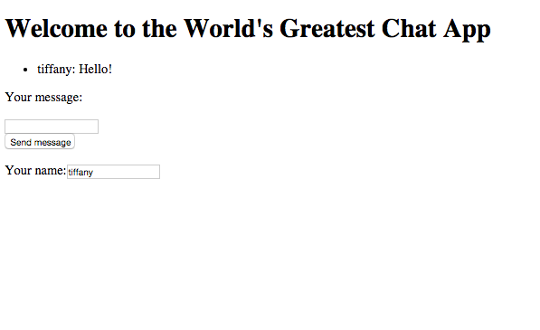
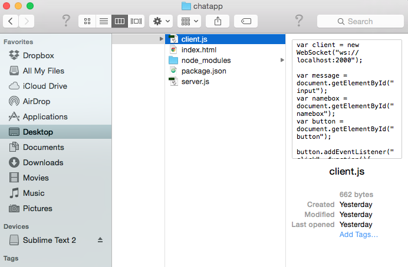
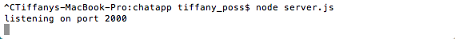
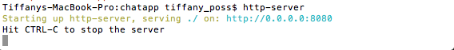

Hey you crazy kids! Here you'll find a tutorial on building and hosting a web-based chat app using WebSockets/Node.js. This guide assumes a basic knowledge of HTML, CSS and JavaScript.
What are WebSockets, you ask? In a nutshell, WebSockets allow for an open and persistent connection between a server and a client, so that clients can distribute data to one another -- like chat messages -- in near real-time, without their browsers refreshing. Check out this Treehouse article for more details.
The chat app we'll be building in this tutorial offers a simple example of the power of this technology in action.
The first thing we need to do is create a Github repository where we'll save our code. Refer to the instructions here on how to do that.
Here a link the the npm page for http server package
http-serverTo build this app, we're going to use a couple of packages from NPM, a package manager for JavaScript. First, let's install the "http-server" package from the terminal. This package will allow us to view the chat app in a web browser.
Here a link the the npm page for ws server package
ws serverWe also need the "ws" package, which lets us make use of WebSockets.
npm install -g wsnpm install -g http-serverAfter you've installed these two packages globally, we need to navigate in the terminal to the folder in which we're building our app. From here, we'll enter a couple of commands to make sure the programs in this folder can make use of the packages we've just installed.
npm init
npm install --save ws
npm init
npm install --save http-server
Now you're ready to write the code for your server. Excited? Me too.
We're writing our code in JavaScript and running it using Node.js, a platform for networking applications written in JavaScript. You can read more about Node.js here.
Because we're using web sockets, the first thing we need to do is tell the computer that we'll be using the web sockets package we installed earlier. We can do that by defining a server that makes use of the "ws" package.
var WebSocketServer = require("ws").Server;Next, we need to choose a port through which users of your chat app will connect to the server. In this case, we'll use port 2000.
var server = new WebSocketServer({port: 2000});We're going to want to keep track of all the users connected to the chat app, so we'll create an array called "clients" -- that's the technical name for the users connecting to your server. For now, this array will be empty, but that will change when users start connecting.
var clients = [];We'll use console.log to print a message in the terminal window that will let us know when the server is up and running.
console.log("listening on port 2000");Now we need to tell the server what to do when a client connects. We're going to use an event listener -- in fact, all the rest of your server code will be contained in this one big listener.
When a new connection occurs, we'll start by having the program print a message in the console and add that client to the list of users in the (previously empty) array we just created.
server.on("connection", function(connection) {
//lets server know a client has connected
console.log("Client connected!");
//adds user to the list of people connected
clients.push(connection);
Next, we need to nest a new event listener within the larger listener to deal with incoming messages. When one of the clients sends a chat message to the server, it will come in encoded with JSON. That means we need to use JSON.parse to decode the message. We'll take the user name of the sender and the text of the message to create a new string that we'll print to the console and send individually to each client in the client array.
connection.on("message", function(message){
var msg = JSON.parse(message);
//de-JSON client message
var msg_decoded = (msg.name + ": " + msg.words);
console.log(msg_decoded);
clients.forEach(function(client){
//send client message to all users in chat
client.send(msg_decoded);
});
});
We also need to tell the program what to do when a user disconnects. For that we'll nest another event listener. This listener will figure out which user disconnected and then remove that user from the clients array before printing the remaining number of connections to the console.
connection.on("close", function (){
var x = clients.indexOf(connection);
//when user disconnects, removes user from user list
clients.splice(x, 1);
//prints the # of users in chatroom
console.log(clients.length);
});
And that's it for the server. You can run this program in the Terminal window by navigating to its folder and typing "node [your file name].js" -- for example, "node server.js." You should see your console message -- "listening on port 2000" -- and a blinking cursor, which lets you know that the server is working and waiting for connections.
Here's the completed program:
var WebSocketServer = require("ws").Server;
var server = new WebSocketServer({port: 2000});
var clients = [];
console.log("listening on port 2000");
server.on("connection", function(connection) {
//lets server know a client has connected
console.log("Client connected!");
//adds user to the list of people connected
clients.push(connection);
connection.on("message", function(message){
var msg = JSON.parse(message);
//de-JSON client message
var msg_decoded = (msg.name + ": " + msg.words);
console.log(msg_decoded);
clients.forEach(function(client){
//send client message to all users in chat
client.send(msg_decoded);
});
});
connection.on("close", function (){
var x = clients.indexOf(connection);
//when user disconnects, removes user from user list
clients.splice(x, 1);
//lets server know # of users in chatroom
console.log(clients.length);
});
});
Now, we're going to write client-side code that will interact with the server code we just wrote.
See below the example client JavaScript code we will be going through in this section. Also Included is the html code that this client is referencing to
//use this definition of the client for testing locally
var client = new WebSocket("ws://localhost:2000");
//var client = new WebSocket("ws://[your-url]:3000");
//use this definition when you're ready to host online
var message = document.getElementById("input");
var namebox = document.getElementById("namebox");
var button = document.getElementById("button");
button.addEventListener("click", function(){
var msg = {name: namebox.value}
msg["words"] = message.value;
var encoded_msg = JSON.stringify(msg);
client.send(encoded_msg);
message.value = "";
});
client.addEventListener("message", function(message){
var ul = document.querySelector("ul");
var newLi = document.createElement("li");
var messageText = message.data;
newLi.innerHTML = " <li> " + messageText + " </li> ";
ul.appendChild(newLi);
});
First thing you must create your Web Socket client. You must establish a client variable and a new WebSocket connection. Here we are hosting it on a localhost, but later when you want to host your chat app on the internet you will have to change it to be hosted on your own site.
You also have the ability to change what port number this is hosted on. In this case it is hosted on port 2000 as you can see at the end of this code. Make sure this number matches the port number on your server code.
var client = new WebSocket("ws://localhost:2000");
In the code below we create links to the html elements from the html file previously mentioned. This grabs the elembets by the id using .getElementById, which grabs text existing elements by their id in html file
The elements that we are grabbing are two imput boxes, var message is for the input box that messages are written in, and var namebox is for the input box that the username is written in. The variable var button is the button that sends messages from the message input box.
var message = document.getElementById("input");
var namebox = document.getElementById("namebox");
var button = document.getElementById("button");
The next section of code sends a message that the client types to the server, which then the server will send back to all clients.
Line 1: button.addEventListener("click", function(){ this calls the button that we previously declared, and adds an event listener to it on the click.
Line 2: var msg = {name: namebox.value} is creating an object variable with a key of name and a value that gets the value from the namebox from the html file. This is assigning a username to a user
Line 3: msg["words"] = message.value; This code take the same object variable msg and assigns a key of words and a value that takes the value of the message input box. This is creating a message from the message box
Line 4: var encoded_msg = JSON.stringify(msg); This code creates a variable var encoded_msg that takes your newly created msg variable and calles JSON.stringify(msg) on it. This is essentially make the object msg into a sendible 'stringified' version of it to the server. The server will unwrap this stringified package back into an object.
Line 5: client.send(encoded_msg); This code sends your to the server using client.send
Line 6: message.value = ""; This resets the message imput box to nothing after the message is set
button.addEventListener("click", function(){
var msg = {name: namebox.value}
msg["words"] = message.value;
var encoded_msg = JSON.stringify(msg);
client.send(encoded_msg);
message.value = "";
});
Line 1: client.addEventListener("message", function(message){ this established a message event listener. The parameter is the incoming message.
Line 2: var ul = document.querySelector("ul"); this selects the ul element from the html file
Line 3: var newLi = document.createElement("li"); this uses .createElement() to create a variable that creates a new li
Line 4: var messageText = message.data; This declares a variable that gets uses .data from message
Line 5: newLi.innerHTML = " <li> " + messageText + " </li> "; This sets the newLi variable's inner text to the messageText surrounded by li tags so it will render on the browser
Line 6:ul.appendChild(newLi); This line puts the newly created li into the ul text area using .appendChild()
client.addEventListener("message", function(message){
var ul = document.querySelector("ul");
var newLi = document.createElement("li");
var messageText = message.data;
newLi.innerHTML = " <li> " + messageText + " </li> ";
ul.appendChild(newLi);
});
Here's a look at the completed client-side code:
var client = new WebSocket("ws://localhost:2000");
client.addEventListener("message", function(message){
var ul = document.querySelector("ul");
var newLi = document.createElement("li");
var messageText = message.data;
newLi.innerHTML = "<li>" + messageText + "</li>";
ul.appendChild(newLi);
});
var message = document.getElementById("input");
var namebox = document.getElementById("namebox");
var button = document.getElementById("button");
button.addEventListener("click", function(){
var msg = {name: namebox.value}
msg["words"] = message.value;
var encoded_msg = JSON.stringify(msg);
client.send(encoded_msg);
message.value = "";
});
Remember our simple chat app we made that looked very plain and boring?
Below we made some simple styling on the chat app. In this section we made a simple styled chat app. We are going to briefly go over what we did to style it.
Here is the sample code we will be working from. The final index.html file and the final styles.css file.
Below is the HTML code we'll be using with the server- and client-side JavaScript. Take note of the id's of the elements below, as they'll be referenced in our JavaScript and CSS.
<!DOCTYPE html>
<html>
<meta charset="UTF-8">
<head>
<title>Chat App</title>
<link href='http://fonts.googleapis.com/css?family=Roboto'
rel='stylesheet'>
<link rel="stylesheet" href="styles.css">
</head>
<body>
<h1>Welcome to the World's Greatest Chat App</h1>
<div id="chatbox">
<ul>
</ul>
</div>
<div id="messageinput">
<p>Your message:</p>
<input type="text" id="input"><br>
</div>
<button type="button" id="button">Send message</button>
<div id="nameinput">
<p>Your name:</p>
<input type"text" id="namebox">
</div>
<script src="client.js"></script>
</body>
</html>
.wrapper {
font-family: 'Roboto', sans-serif;
max-width: 48em;
margin-right: auto;
margin-left: auto;
padding-right: 24px;
padding-left: 24px;
}
#header{
margin-top: 20px;
}
#header h1{
margin: 0;
}
#namebox{
margin-left: 20px;
}
#chatbox{
width: 500px;
height: 400px;
background-color: lightgrey;
padding-top: 30px;
padding-bottom: 30px;
}
#messageinput p{
display: inline-block;
margin-right: 20px;
}
#input{
width: 300px;
}
ul{
list-style-type: none;
}
button {
font-size: 1em;
margin-top: 30px;
width: 200px;
height: 50px;
background-color: #0da1d8;
border: none;
color: #ffffff;
}
It is important to keep the IDs that we assigned and used in the javascript files, or your server and client code will break.
In the html file we changed the position of some of the elements and added a link to a google font style. We also added a header id to the top header so we could position it as a unit.
In the CSS file we added some styling to different sections as you normally would with css. The most noteable features are the background color or the #chatbox section and setting its width and height to a fixed size, so the box doesn't change size as li elements are added during a chat.
Also, we set ul elements in the css to list-style-type: none; so bullet points do not appear on the page. during typing.
Other than that, you can style this page as you normally would any other html file. Enjoy!
In this section we will go over how to test your Server and Client code to make sure your chat app is is working properly.
Make sure you have your server.js, client.js, index.html, node_modules folder, and package.json in the same folder.
You need to run two servers for you chat app. The WebSocket server you wrote in this tutorial and an http server to host your html file and it's contents.
In one window navigate navigate to the folder that contains all of your files. once you are in that file, type node server.js in the terminal and press enter.
In the second terminal window type in http-server and press enter. This runs an http server so you html file will be hosted.
Go to your web browser. To see your site type in localhost:8080 (http servers defalut to port 8080, when logging onto your http server if you were to type http-server -p1000 your server would be running on port 1000 instead of 8080) Your basic html file should render. If you open multiple browser windows ang go to localhost:8080 you can chat between browsers.
Congratulations! Your server is working locally! Make sure you exit both of terminal servers by hitting control C. Now you can CSS style and add features to your chat app. Add a function that renders photos? Emojis?
Now that you have a clone of your repo on your DO box, this is what you will have to do every time you want to start up your server.
forEach push addEventListener getElementById indexOf splice length